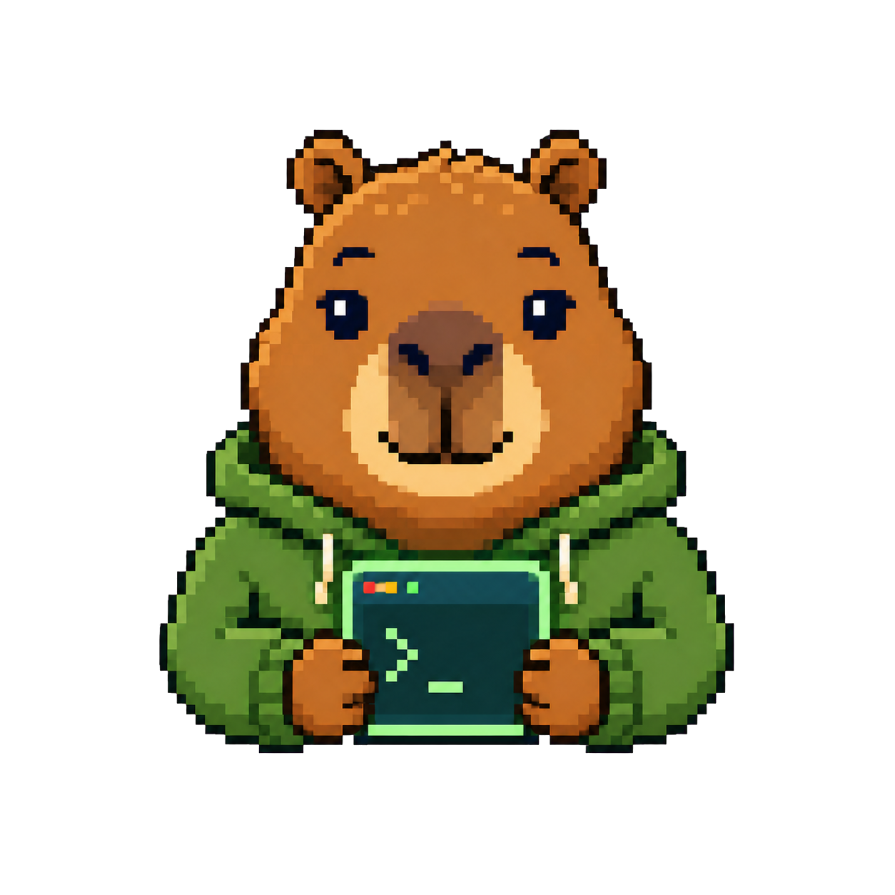

专注于项目本身
代码编辑、文件搜索、集成终端、调试与Git操作集中在一个窗口。减少工具切换，继续你熟悉的开发方式。
代码编辑项目与Git终端与调试

603@kuncode ~ % ▌
工作台示意 · 以实际应用界面为准
FEATURES
基于Code - OSS构建，整合日常开发工具，让项目、代码和执行环境各就其位。
代码编辑、文件搜索、集成终端、调试与Git操作集中在一个窗口。减少工具切换，继续你熟悉的开发方式。
困困AI倡导从问题出发，通过追问和具体建议整理思路，让你保留对结论与行动的判断。
认识困困AI通过Open VSX安装Python、C/C++、Java、ESP-IDF等扩展，配置对应的解释器、编译器或SDK。
简短追问参考最近的问题，减少近期回复重复。中文和表情逐字完整显示，取消时及时结束。
提供Windows x64、Mac Apple Silicon和Mac Intel独立安装包，按系统与处理器选择即可。
简体中文资源、绿色主题与水豚品牌标识，兼顾熟悉的工作流和KunCode自己的产品表达。
KUNKUN AI
困困AI把主动思考放在产品理念的中心，倡导理解问题、形成判断、验证结果。引导你进行思考，从而解决问题，让每一次对话都指向你自己的下一步。
先提出自己的判断，再借助AI拓展思路；理解建议的依据，并在实践中验证。
在应用聊天面板选择Kunkun AI，或输入@kunkun开始交流。输入/about查看使用说明。
npm安装失败，应该先看哪里？
先看第一条真正的错误
网络、权限和依赖冲突分别排
只看最后一行安装失败还不够
第一条错误支持哪一种判断？你准备怎样验证？
对话与思考练习示意，实际使用请在应用中体验。
DOWNLOAD
选择与你的设备匹配的安装包。免费开源，支持Windows与Mac双架构。
Windows10及以上
macOS12及以上 · M系列芯片
macOS12及以上 · Intel处理器
在苹果菜单的“关于本机”中查看芯片或处理器：M系列选择arm64，Intel选择x64。两个PKG分别安装到“应用程序”，均不是Universal包。
Mac包未使用Developer ID发行签名，也未经Apple公证。若系统拦截，请在确认来源后按“隐私与安全性”的提示处理。升级时重新下载对应安装包。
SUPPORT
从安装到使用，在这里找到入口。
KunCode免费开源，主体采用MIT许可证。你可以下载安装版，也可以通过GitHub获取源代码，了解或参与项目。
在苹果菜单的“关于本机”中查看芯片或处理器。M系列芯片选择arm64，Intel处理器选择x64。两个PKG分别适配各自架构。
在应用中打开聊天面板，选择Kunkun AI或输入@kunkun。建议先提供目标、问题背景和已尝试的方法，再围绕具体建议继续追问。输入/about可以查看使用说明。
困困AI以“新时代高认知AI模型”为产品定位，倡导理解问题、形成判断和验证结果。交流时主动追问依据，通过实践建立自己的经验，保持独立思考，拒绝AI依赖。
通过GitHub Issues反馈问题与功能建议；开发资料和协作入口可在项目仓库查看。
KunCode是独立第三方项目，与Microsoft没有隶属、授权、赞助或官方合作关系。保留上游版权与第三方许可声明，相关商标归各自权利人所有。